Fortinet Enterprise Networking & Security
Friday, November 20, 2026 · 09:21 PST · 12 mandatory product targets · source-grounded mechanics, evidence, diagrams, and an interactive examination.
PARTIAL — content and diagrams complete; publication checks pending
Completed: pre-generation exclusion inventory, 12-product documentation sweep, 12 substantive lessons, 24 diagram assets, and a 50-question examination with 200 per-choice explanations.
Remediation: retry direct Fortinet Document Library access and continue the Community/KB sweep for fresh feature-specific scenarios. A missing recent scenario is disclosed rather than replaced with unrelated material. The recurring task was not modified.
Discovery and 30-day exclusion
Before topic selection, the prior 30-day published-report set was inspected directly from ccaiccie4/Fortinet/docs. The earlier same-day 07:57 report was also included as a prior run for this 09:21 generation. The machine-readable inventory was created and read back before topic selection.
- 32 report/status HTML artifacts inspected.
- 366 historical lesson fingerprints compared across product, subject, primary URL, scenario URL, mechanism, workflow, failure class, evidence, remediation, question, and diagram topology.
- 12 selected candidates passed semantic overlap review. A new URL alone was not accepted as proof of novelty.
- Primary lesson sources are Fortinet administration, configuration, new-features, or deployment documentation. Community/KB material is scenario evidence only.
Open pre-generation exclusion inventory · Open selected fingerprints · Open administration-guide sweep · Open Community sweep
Today's lesson map
Coverage and depth
BGP conditional advertisement: multi-condition logic and cross-family RIB evaluation
Purpose and control point
BGP conditional advertisement is an export gate. It does not select the best route in the local routing table and it is not a substitute for an outbound prefix list. It decides whether a configured advertise-map is sent to a particular BGP neighbor after one or more condition route maps have been evaluated. This is useful when a site should announce a service prefix only while a backup path is needed, or when an advertisement must depend on the presence or absence of several upstream routes.
The important objects are the neighbor, the advertise route map, the condition route maps, and the condition type. The advertise route map describes what can be announced. The condition route maps describe when that announcement is allowed. The condition type is either exist or non-exist. Multiple condition route maps are conjunctive: every configured condition must satisfy the selected condition type. Do not read a list of condition maps as an OR list.
How the decision is made
FortiGate evaluates conditional route-map predicates against the BGP routing information base (BGP RIB), not against every route in the general forwarding table. A static or connected route can be usable for forwarding and still be invisible to a BGP conditional-advertisement predicate. If a condition depends on a prefix, ensure that prefix is actually learned by BGP or originated into BGP with the appropriate network/redistribution design. A route that exists only in the kernel routing table is not sufficient evidence for an exist condition.
IPv4 and IPv6 conditional advertisements are supported. Cross-address-family evaluation is a separate global behavior. By default, cross-family-conditional-adv is disabled, so an IPv4 condition map is checked against the IPv4 RIB and an IPv6 condition map against the IPv6 RIB. If an IPv6 advertisement references an IPv4 condition while cross-family checking is disabled, the IPv4 prefix is treated as absent from the IPv6 RIB. That can make a non-exist condition unexpectedly true.
Configuration pattern
Build prefix lists and route maps first. Then attach the advertise-map and condition maps to the intended neighbor. The example below shows the structure; substitute the actual route-map names and neighbor address from the design.
config router bgp
set cross-family-conditional-adv enable
config neighbor
edit "2001:db8:ffff::2"
config conditional-advertise6
edit "backup-only"
set advertise-routemap "ANNOUNCE-SERVICE-V6"
set condition-routemap "PRIMARY-V4-DEFAULT" "SITE-HEALTH-V6"
set condition-type non-exist
next
end
next
end
endEnable cross-family evaluation only if the condition really must span address families. For same-family conditions, leave the default disabled and keep the route maps in the matching RIB. For a dual-ISP design, a common intent is to advertise a local service prefix to ISP-B only when the primary ISP-A default route is absent from BGP. That intent must be expressed against the BGP-learned default route, not merely a static default in the routing table.
Verification and interpretation
Start with get router info bgp neighbors <peer> and inspect the Conditional advertise-map and each condition state. A state vector such as 0-1 is evidence that the individual predicates did not all evaluate true; it is not proof that the BGP session is down. Use get router info bgp network <prefix> to confirm the condition prefix is in the BGP RIB and which path supplied it. For IPv6, inspect get router info6 routing-table bgp and the neighbor's conditional-advertisement output. Use diagnose ip router command show-vrf root show running router bgp to confirm the running conditional configuration.
These commands prove route presence and conditional state; they do not by themselves prove that the upstream accepted or installed the route. Confirm the neighbor's received/advertised routes on the peer or inspect the relevant BGP update evidence. When troubleshooting, check route-map sequence order, prefix-list masks, AS-path matches, condition-type polarity, and whether the condition is actually BGP-originated. A missing AS-path list or a prefix that never entered BGP can make the feature appear inert.
Operational caveats
Conditional advertisement is per neighbor. A working policy on one peer does not imply another peer has the same condition maps. Cross-family evaluation changes the meaning of an absent route, so test both the route-present and route-absent cases before production. In HA, validate the effective BGP RIB and neighbor configuration on the active routing unit after failover. During upgrades, re-check the running configuration and route-map references rather than assuming the policy object survived unchanged.
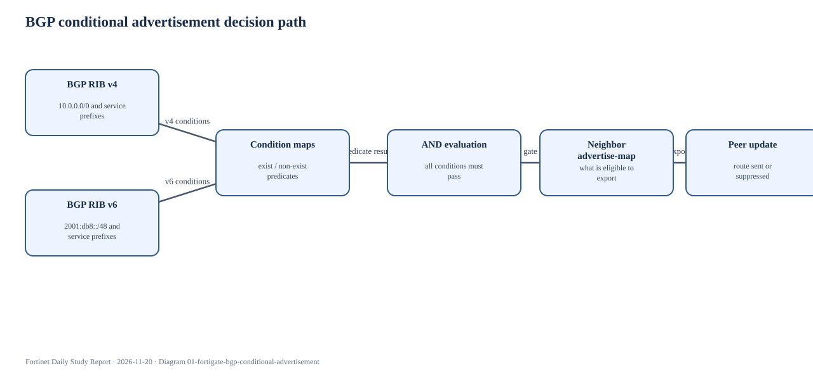
Scenario / Community reference: Open scenario reference Historical Community example (2019), used only to illustrate dual-ISP failover intent; it is not represented as a recent article.
FCT_IPsec_Recommended: factory template activation and managed-device installation
What the recommended template actually creates
FortiManager 8.0 ships recommended IPsec provisioning templates. They are not installed directly as immutable factory objects. The administrator activates a recommended template, supplies environment-specific values, and FortiManager creates a new editable template based on that factory definition. This distinction matters operationally: the object that is later assigned to a device is the generated template, not the factory seed. The factory template can remain available as a reusable baseline while the generated instance carries the site's values.
The selected FCT_IPsec_Recommended template is intended for FortiClient VPN tunnels. It should not be confused with HUB_IPSec_Recommended or Branch_IPSec_Recommended, which are intended for hub/branch VPN roles and can be used with the SD-WAN provisioning workflow. Mixing those templates changes the assumptions about dial-up peers, remote gateway identity, and the role of the managed FortiGate.
Activation and parameter binding
Navigate to Device Manager > Provisioning Templates > IPsec Tunnel, select FCT_IPsec_Recommended, and choose Activate. The activation form requests a template name, outgoing interface, IPv4 start and end addresses, IPv4 netmask, and pre-shared key. Those fields become the site-specific inputs for the generated template. The address range is part of the remote-access client address plan; check it against existing LAN, VPN, DHCP, and other remote-access pools before activation. The outgoing interface must represent the intended egress path from the FortiGate.
After activation, inspect the generated template rather than assuming the factory defaults match the environment. The generated object can be edited, cloned, or deleted. It can also be placed into a template group where the deployment model uses groups. Assign the generated template or group to the intended managed FortiGate devices or device groups, then install the device settings. Activation alone does not change a managed FortiGate. Assignment alone does not guarantee that the configuration has been installed.
Configuration and deployment sequence
Device Manager
> Provisioning Templates
> IPsec Tunnel
> FCT_IPsec_Recommended
> Activate
> set outgoing interface, client range, mask, PSK
> save generated template
> assign to device/device group
> install device settingsKeep the factory seed, generated template, assignment scope, and installed device configuration conceptually separate. This separation makes it possible to reuse a baseline without accidentally changing every site when one branch needs a different pool or egress interface. If the generated template is cloned, name the clone so that its purpose and intended target group are obvious.
Evidence and troubleshooting
On FortiManager, verify that the generated template exists in the IPsec Tunnel template list, that the target device or group is assigned, and that the install preview includes the intended VPN objects. The preview is the control-plane proof that FortiManager intends to push the generated configuration. On the FortiGate, inspect the resulting phase-1 and phase-2 interface configuration and confirm that the client address range and outgoing interface match the intended design.
A missing or incomplete install preview is not automatically an IKE negotiation problem. A known class of template installation errors occurs when a template-generated tunnel interface is referenced by another object but the template is removed or the target device is no longer included in the template's assignment. The Community example describes an interface reference that blocks installation preview. Correct the assignment or remove stale references only after checking what consumes the interface. Also check that interface IP and remote-IP values use the syntax expected by FortiGate; metadata-backed values must preserve the same syntax.
Operational boundaries
Do not delete a generated template simply because one device no longer needs it; first search for template-group membership, device assignments, normalized interfaces, firewall policies, and route references. Treat the pre-shared key as secret material and limit who can view or change the template. After firmware or ADOM upgrades, re-open the template and validate its parameter schema and installation preview before broad deployment. A successful install proves configuration delivery, not successful IKE negotiation; tunnel establishment still depends on peer identity, proposals, reachability, and matching remote configuration.
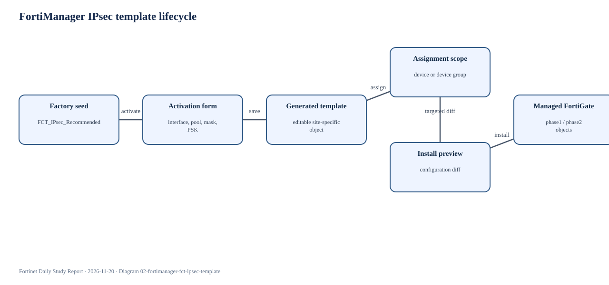
Scenario / Community reference: Open scenario reference Historical Community install-preview scenario (September 2025); used as a failure-pattern illustration, not as the primary feature source.
Fabric Supervisor HA: control-plane ownership and member reconnection after failover
Why supervisor HA is different
FortiAnalyzer Fabric Supervisor HA protects the Fabric control point, not merely an individual Fabric member. Beginning in FortiAnalyzer 8.0.0, the supervisor can be deployed as an active-passive HA pair. Active-active mode is not available for supervisors. The primary supervisor owns the member-facing control connections. The secondary receives synchronized Fabric Settings but does not independently establish connections to Fabric members while it is in standby.
This creates a behavior that can look like a fault if an operator expects both supervisors to show live member sessions. Before failover, the secondary can show the same Fabric topology because its supervisor data has synchronized, yet member connections are still established through the primary. After the primary fails and the secondary is promoted, the Fabric members automatically connect to the new primary and data synchronization follows. The delayed member reconnection is part of the design.
Objects and synchronization boundaries
The HA pair contains the normal FortiAnalyzer HA objects: operation mode, preferred role, peer IP and serial number, group name, group ID, password, heartbeat settings, and synchronization state. Supervisor HA adds a Fabric-specific data boundary. The supervisor's Fabric Settings configuration is replicated, but member connection ownership remains with the active primary. The secondary can view member devices, logs, FortiView, and Reports data through the primary connection. Some management actions, such as authorizing, rejecting, or deleting members and creating Fabric Groups, are disabled on the secondary.
For a new cluster, follow the documented initial-sync behavior carefully. At least one node must have Initial Sync disabled during initial formation; if every node tries to initiate initial synchronization, the cluster can remain stuck. A secondary is not fully functional until the initial data synchronization completes. Keep the two nodes on compatible supported firmware and use consistent cluster identity and credentials.
Deployment and verification
Configure the intended primary as the primary node of an active-passive HA cluster. Configure the secondary with the primary's peer identity and the same group name, group ID, and password. Then review the Cluster Status pane. The supervisor-specific evidence is the Supervisor Data Sync column. Once synchronized, open System Settings > Fabric Management > Fabric Settings on both nodes and compare the topology.
Before a controlled failover, record which node is primary, the member count, the Supervisor Data Sync state, and the Fabric topology. After promotion, verify that the former secondary is primary and that members reconnect to it. A temporary absence of member connections on the standby before failover is expected; a prolonged absence after promotion is not. Check member connection state and data synchronization rather than assuming the standby must maintain parallel member sessions.
Operational troubleshooting
When failover appears to leave the Fabric disconnected, separate three questions: did the HA role change, did supervisor data sync complete, and did members reconnect to the new primary? A healthy cluster role alone does not prove member reconnection. A matching topology on both nodes proves configuration replication, not active member ownership. Conversely, the secondary's disabled member-management controls are expected and should not be treated as permission corruption.
Preemption can affect the final role after a forced failover. A historical Community tip documents that a unit configured with preferred-primary/preemption can reclaim the primary role after a manual failover. Review the configured preference and upgrade procedure before repeating failovers. During upgrades, follow the supported sequence and re-check role, synchronization, and member connections at each step. Do not use repeated manual failovers to mask incomplete synchronization.
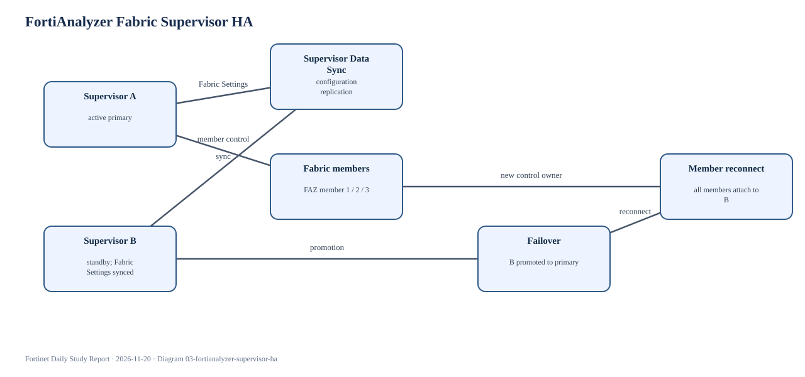
Scenario / Community reference: Open scenario reference Historical FortiAnalyzer HA preemption tip (June 2025); used to highlight role-election expectations, not to replace the 8.0 supervisor design documentation.
PoE admission and power priority: dynamic guard band, AF/AT class, and port override
PoE is an admission-control problem
A FortiSwitch PoE port is a power-sourcing interface, not just an Ethernet link. When a powered device is connected, the switch must decide whether it can reserve enough power before enabling delivery. FortiSwitch uses a dynamic guard band (DGB) so that the switch reserves the expected maximum power for the detected device type before turning on the port. The documented guard-band values are 15.4 W for IEEE 802.3af and 36 W for IEEE 802.3at. When the switch is fully loaded, the reservation can prevent a newly connected device from powering on even if the device would normally consume less than the reserved maximum.
This explains a common operational surprise: a new access point or phone can remain unpowered while the switch still reports a healthy Ethernet port and while existing PoE endpoints continue operating. The switch is protecting the power budget, not necessarily reporting a cable or VLAN failure.
Allocation policy
FortiSwitch supports priority-based power allocation and first-come, first-served (FCFS) behavior. In priority mode, power is allocated according to priority. The GUI priorities are Critical, High, and Low; Critical is served first, then High, then Low. When power demand exceeds the available budget, higher-numbered ports are disabled first because lower-numbered ports have higher port priority. In FCFS mode, already connected powered devices keep their power and new devices are denied when the remaining budget is insufficient.
The physical-port configuration can override the global allocation setting. Therefore, a global policy that appears correct may not govern a particular port. Check the effective per-port configuration before changing the switch-wide policy. Port priority and port numbering are separate considerations: a port can be marked critical, but the documented port-order behavior still matters when the switch sheds power under a shortage.
Configuration example
config switch physical-port
edit "port12"
set poe-status enable
set poe-port-mode IEEE802_3AT
set poe-port-priority critical-priority
next
endUse the model's supported PoE class and maximum-power options. FortiSwitchOS 7.6.2 and later also documents poe-max-power-mode values of 30W, 60W, and class-based on supported models. Do not assume every hardware model supports every mode. Perpetual PoE is another model-dependent feature; it can preserve power during switch restart, but it is not the same as increasing the total power budget.
Evidence and diagnosis
Use get switch poe inline to review the switch's inline power capacity and diagnose switch poe status port12 to inspect a specific port. The port output can show whether power is being delivered, the remote powered-device type, power class, defined maximum power, priority, voltage, and current. This proves the switch's view of the PoE negotiation and allocation state. It does not prove that the endpoint's internal power supply or boot process is healthy.
If a port is not delivering power, compare the device class with the reserved guard band, inspect remaining budget, verify the per-port priority and mode, and compare global versus port-specific settings. A port that is denied power because of budget admission should not be “fixed” by repeatedly bouncing the Ethernet link.
Safety and operational caveats
Do not connect two PoE PSE ports together over copper while both are enabled. Fortinet warns that this can inject voltage between power-sourcing ports. If two PoE ports must be connected directly, disable PoE on both before inserting the cable, or use the documented fiber connection between PoE switches. Before a maintenance window, identify critical powered endpoints and confirm their power priority, switch model capability, and total power headroom.
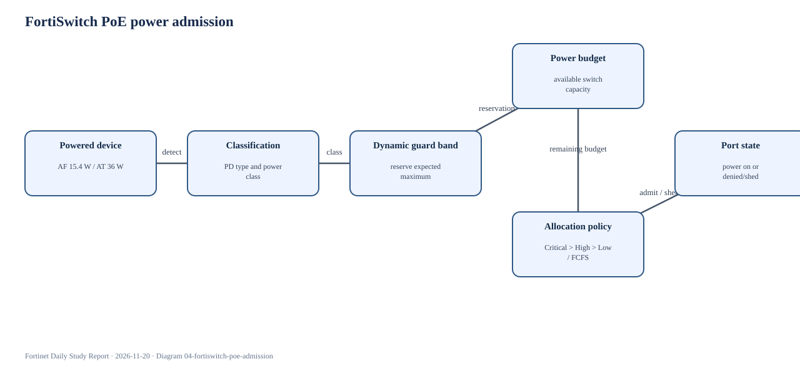
Scenario / Community reference: No directly matched scenario was verified for this feature in the current 30-day window. See the Community sweep.
Automated FortiAP location positioning: Static LoWi, GNSS, and 802.11mc trilateration
Purpose and source precedence
FortiOS 8.0 adds automated FortiAP location positioning so an AP can report geographic coordinates without requiring a technician to manually survey every installed unit. The controller uses three sources in a strict priority order: user-entered Static LoWi coordinates, coordinates from the AP's built-in GNSS receiver, and calculated LoWi coordinates derived from Wi-Fi round-trip-time measurements. If a static position is configured, it takes precedence even when GPS is available. If no static position is enabled, the AP uses GNSS when available; otherwise it attempts LoWi calculation.
Location is operational data, not a cosmetic label. Accurate coordinates can support regulatory location requirements such as Automated Frequency Coordination (AFC) in applicable regions. The reported error bounds matter: a coordinate with a large uncertainty is not equivalent to a surveyed point.
How 802.11mc LoWi works
LoWi uses IEEE 802.11mc round-trip-time measurements between FortiAPs. An initiator AP sends RTT measurement requests to nearby responder APs. Responders with known positions provide distance measurements. The initiator combines those distances with the known responder coordinates and estimates its own three-dimensional position through trilateration. The documented deployment requires at least four responder APs with known locations and one initiator AP, for five APs in total. More responders may improve geometric coverage, but the minimum is not optional if the calculation is expected to be complete.
The WTP profile controls the 802.11mc role with set 80211mc-mode auto|initiator|responder. The radio capability is enabled separately under the 5-GHz radio using set 80211mc enable. Fortinet documents 802.11mc measurement on 5 GHz for better accuracy and reliability; it is not configured on 2.4 or 6 GHz. A profile that selects the initiator role but leaves RTT measurement disabled cannot produce a LoWi result.
Configuration pattern
config wireless-controller wtp-profile
edit "FAP-LOWI-RESPONDER"
set 80211mc-mode responder
config radio-2
set 80211mc enable
end
next
edit "FAP-LOWI-INITIATOR"
set 80211mc-mode initiator
config radio-2
set 80211mc enable
end
next
endApply the responder profile to at least four APs whose coordinates are already known. Apply the initiator profile to the AP whose location must be calculated. For a manual fallback, configure Static LoWi latitude, longitude, altitude, and the corresponding error values under the individual WTP entry. Treat static coordinates as an intentional override, not as a harmless annotation.
Verification and interpretation
On FortiGate, run diagnose wireless-controller wlac -c wtp <serial>. The lowi-pos-type field identifies whether the active source is static, gps, or lowi. The latitude, longitude, altitude, and error values show the actual reported position and uncertainty. On the AP, rcfg output can confirm the operational 802.11mc role, while wcfg can expose LoWi status.
A lowi-pos-type: static result proves the controller is using the configured static source; it does not prove that automatic ranging is working. A gps result proves GNSS coordinates are being used, not that the AP has completed a LoWi calculation. A lowi result with large error bounds points toward responder geometry, coordinate quality, or measurement availability.
Operational troubleshooting
First check source precedence. Then verify the responder count, known coordinate quality, 5-GHz radio capability, 802.11mc enablement, and initiator/responder operational roles. If the AP reports static or GPS when LoWi was expected, remove or correct the higher-priority source only after confirming the intended fallback. Do not troubleshoot this as a client-association or CAPWAP issue until the location source and RTT state have been checked.
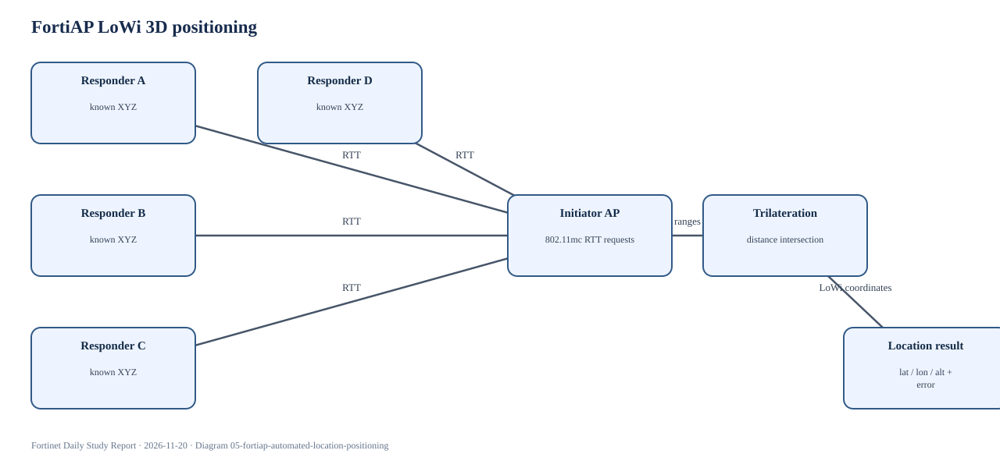
Scenario / Community reference: Open scenario reference Adjacent 6-GHz/AFC Community tip (approximately five months old) includes static LoWi and positioning verification; it is not a direct recent positioning incident.
FortiNAC 9.4 Kerberos authentication through Local Winbind and keytab
Authentication scope in 9.4
FortiNAC 9.4 adds Kerberos support for administrator and user authentication on FortiNAC-CA, and administrator authentication on FortiNAC Manager (FNAC-M). The feature is tied to the Local Winbind configuration and its Active Directory domain context. It is important to separate that context from ordinary LDAP directory synchronization: FortiNAC can use LDAP to read users and groups, while Winbind provides the domain-join and NTLM/Kerberos-related integration needed by the supported authentication paths.
Local Winbind configuration includes the local NetBIOS name, domain NetBIOS name, Kerberos realm, domain-controller hostname, and join credentials. The Kerberos realm is the DNS-style domain name, such as corp.example.com; the NetBIOS domain name is the short name, such as CORP. The domain-controller hostname identifies the server or servers Samba/Winbind can use for validation. Do not enter the DNS realm where the short NetBIOS name is expected.
Domain join and keytab transaction
Winbind authentication requires FortiNAC to be joined to the domain. The join operation establishes the machine trust context that later authentication uses. FortiNAC can join using a configured account and password, or an uploaded Kerberos keytab. A keytab contains service principal key material and allows the appliance to perform the domain join without retaining the administrator account password in the configuration workflow. Fortinet documents keytab use for both RADIUS MSCHAPv2 and portal authentication using Kerberos.
The keytab must match the intended principal and realm. A keytab for a different account, hostname, or realm can be syntactically accepted but fail during the actual domain interaction. Kerberos is time-sensitive, so FortiNAC and the domain controllers must have consistent time. A large clock offset can break ticket validation even when DNS and basic IP connectivity are correct.
Configuration and boundaries
In the Local Winbind configuration, set the NetBIOS name, domain NetBIOS name, Kerberos realm, and one or more domain-controller hostnames. Then provide join credentials or upload the keytab, perform the domain join, and enable the service only after the join succeeds. Use the documented * domain-controller selection only when dynamic DC selection is appropriate for the deployment.
Do not assume every LDAP/Kerberos directory is an Active Directory domain. A recent Community scenario documents a Winbind join failure against FreeIPA: the FortiNAC Join Domain function performs a Samba Active Directory join, which FreeIPA does not accept. The same boundary applies to other non-AD LDAP/Kerberos directories. LDAP-based user/group synchronization and portal/admin authentication can still be designed through the LDAP directory; that does not make the directory a valid Winbind AD-join target.
Evidence and troubleshooting
Check the Local Winbind fields, domain-join result, domain-controller discovery, and Winbind service status. Confirm the NetBIOS short name and DNS Kerberos realm are not swapped. Verify the keytab principal against the domain account and realm. Check time synchronization with the domain controller before chasing authentication policy. For a FreeIPA or OpenLDAP environment, stop retrying AD join with different NetBIOS values; choose the LDAP integration path for the functions that do not require Winbind.
The 9.4 release note establishes which FortiNAC roles support Kerberos; the Local Winbind guide describes the join inputs. Neither source implies that every authentication method is automatically converted to Kerberos. Confirm the actual user/admin authentication policy and the appliance role before testing. In HA deployments, validate the identity and time configuration of each node rather than assuming a shared IP makes the secondary's domain context identical.
Operational lesson
Think of LDAP synchronization, Winbind domain membership, Kerberos tickets, and RADIUS MSCHAPv2 as related but distinct paths. A successful LDAP search proves directory reachability; it does not prove the appliance is joined to AD. A successful domain join proves machine trust; it does not prove that the correct portal or administrator policy selects Kerberos. Diagnose each boundary independently.
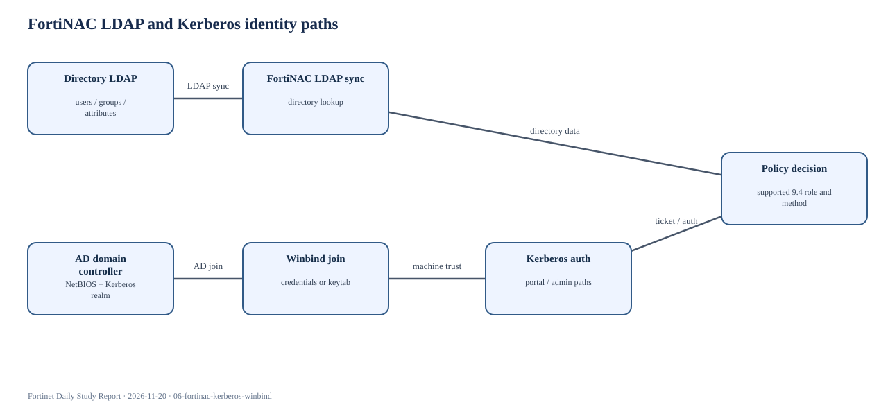
Scenario / Community reference: Open scenario reference Community troubleshooting tip dated October 2, 2026 (outside the 30-day window); used to distinguish AD domain join from LDAP directory integration.
Isolation DNS proxy and Allowed Domains: captive redirection versus production DNS
Why isolated hosts use FortiNAC for DNS
In a FortiNAC-F isolation network, the appliance's Service Network Interface (port2/eth1) acts as the DNS server supplied to isolated hosts by DHCP. The DNS behavior is part of the captive/registration boundary. If a queried domain is not in the Allowed Domains list, FortiNAC returns the isolation-interface address so that the endpoint remains on the captive or registration path. If the domain is allowed, FortiNAC forwards the query to the configured production DNS server and returns the production answer to the isolated host.
This is not a general-purpose router or firewall function. FortiNAC decides which DNS names can resolve through production DNS; the existing network infrastructure still carries the resulting traffic. A host can receive a valid production IP address and still be unable to reach it if the isolation VLAN's routing and firewall policy do not permit the connection.
Allowlist semantics
The Allowed Domains view contains production DNS server IP addresses and a list of authorized domains. Wildcard characters are not supported in the domain list. Adding a parent domain such as microsoft.com permits its subdomains; adding only downloads.microsoft.com permits that subdomain rather than the entire parent namespace. The list applies to all configured portals, not separately to each portal.
The DNS forwarding setting also controls whether FortiNAC may perform iterative queries to external authoritative servers. If the option to prevent iterative queries is enabled, FortiNAC forwards only to the specified production DNS IPs. This makes the configured DNS forwarders a critical dependency. If they are unreachable or point to a resolver that cannot answer the required internal names, the isolated endpoint will not resolve them even though the domain is allowlisted.
Resolution transaction
- The isolated endpoint receives DHCP options that identify FortiNAC port2 as its DNS server.
- The endpoint queries FortiNAC for a required domain.
- FortiNAC checks the Allowed Domains list.
- If the name is allowed, FortiNAC forwards the query to the configured production DNS server and relays the answer.
- If the name is not allowed, FortiNAC returns the isolation-interface address to preserve the captive/registration flow.
Include the complete set of names needed by the endpoint's workflow: domain controllers, identity-provider endpoints, certificate-validation services, operating-system update services, antivirus update services, and any CNAME targets. A query for an allowed name can still fail if the returned CNAME or delegated authoritative name server requires another DNS query that is not allowed.
Evidence and diagnosis
Use the FortiNAC named service log to identify queries that are being passed through or redirected. A useful starting point is:
grep PassThru /bsc/logs/named.log | cut -d' ' -f11 | sort | uniq -c | sort -rgFor a specific endpoint, filter by its isolation IP and inspect the adjacent log entries. Then query FortiNAC directly with dig @<port2-IP> <fqdn>. Compare the answer with the production DNS answer. A response containing the isolation-interface IP indicates that the query did not take the production-forwarding path. A production answer proves DNS forwarding; it does not prove the isolation VLAN has a route or firewall permission to the destination.
Failure boundaries and safe remediation
Do not add the FortiNAC appliance's own FQDN or its parent domain to the allowlist. Fortinet warns that this can create asymmetric routing and prevent the agent from establishing its TCP connection. Do not prefix domain entries with a dot; a leading dot can break the named-chroot service and, in HA, can trigger a failover. If a required domain cannot be added because it overlaps the isolation network's configured domain name, correct the isolation-domain naming rather than repeatedly retrying the same entry.
Add only the required domains, including CNAME and identity-provider dependencies. Save the Allowed Domains settings, flush the endpoint DNS cache, reconnect it to isolation, and repeat the query. If DNS now resolves but the application remains unreachable, move to routing/firewall policy troubleshooting; do not continue changing the DNS allowlist.
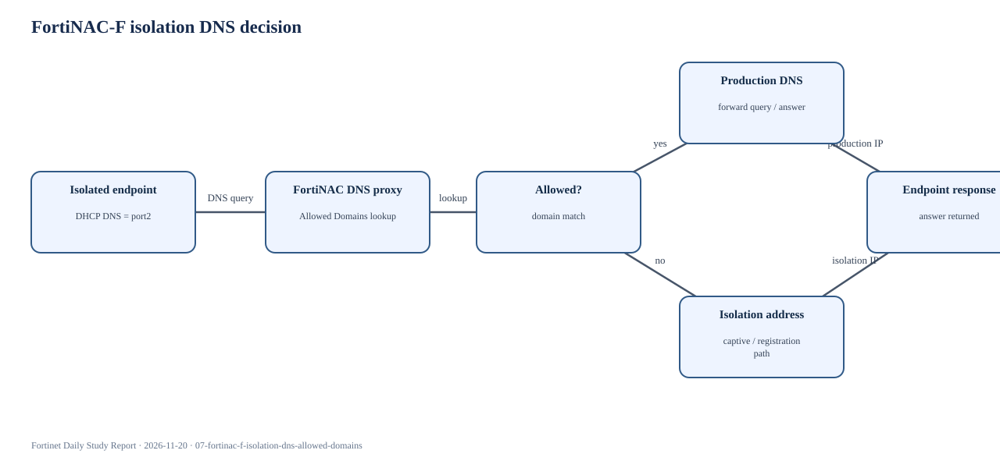
Scenario / Community reference: Open scenario reference Historical Community isolation-DNS tip; used as a scenario pattern, not as a recent article.
TACACS+ authorization rules: command arguments, services, and cached sessions
Authentication is not command authorization
With TACACS+, successful user authentication establishes identity, but it does not automatically grant every shell command or service. FortiAuthenticator separates the post-auth authorization decision into rules, non-shell services, and shell-command objects. Rules can be assigned to a user group or an individual user. This lets an administrator authenticate a network operator once and then constrain which commands, arguments, and non-shell services that identity can invoke.
An authorization rule defines a privilege level from 0 through 15, the default permission for non-shell services, the allowed services, the default permission for shell commands, and the shell-command objects included in the rule. A shell-command object defines the command string and the allowed or denied argument sets. The default permission for unspecified arguments is important: if the command is allowed but argument matching is incomplete, the default determines how unmatched arguments are treated.
Authorization objects and response semantics
For non-shell services, FortiAuthenticator can allow or deny the service as a whole and can attach TACACS+ service attribute-value pairs. Each AV pair can be marked mandatory or optional. A mandatory attribute means the receiving device must understand and honor it; if it cannot, authorization fails. An optional attribute may be ignored by the client. This distinction matters when a device's TACACS+ implementation supports only part of the requested authorization response.
Shell command rules are more granular. A rule can include a named shell-command object, and that object can allow or deny specific arguments. A broad command permission with a permissive default can unintentionally allow dangerous subcommands. Conversely, an overly restrictive default can deny harmless commands that were not enumerated. Test the exact command and argument string emitted by the network device rather than assuming that the CLI's visual command form matches the TACACS+ request exactly.
Authorization-session cache
After successful authentication, FortiAuthenticator creates an authorization session that defaults to 28,800 seconds (eight hours). Changes to authorization rules during that period do not apply to the existing user's authorization session until it expires. This is not the same as a user authentication failure or a stale device-side privilege level; it is a documented session-lifetime boundary. The session duration can be changed under Authentication > User Account Policies > General, with a documented range of 120 to 36,000 seconds.
During a policy test, an administrator may temporarily reduce the duration, open a fresh TACACS+ session, and verify the new command permissions. Restore the intended production duration after testing. Do not leave an artificially short authorization lifetime in place without considering the added authentication and authorization load.
Verification and troubleshooting
Check the selected user/group rule, the rule's privilege level, default service permissions, allowed services, shell-command list, and argument allow/deny sets. Inspect TACACS+ authentication and authorization logs separately. Authentication success proves the identity was accepted; an authorization log proves that a command or service request was evaluated. If a removed command still works, check whether the user is operating within an existing authorization session before changing the client definition.
If a non-shell service is denied, inspect the service name and mandatory/optional AV pairs. If a shell command is denied, compare the requested command and arguments with the configured shell-command object and its default permission. If an attribute is mandatory and the device cannot honor it, the authorization response can fail even when the user is authenticated.
Operational controls
Use group-level rules for stable role definitions and per-user rules only for deliberate exceptions. Keep command objects narrow, define safe defaults, and document why a command's arguments are allowed. Review session duration as part of change management because authorization changes are not instantaneous for active sessions. The Community session-duration tip reinforces that a new session or expiry is required to test updated authorization rules reliably.
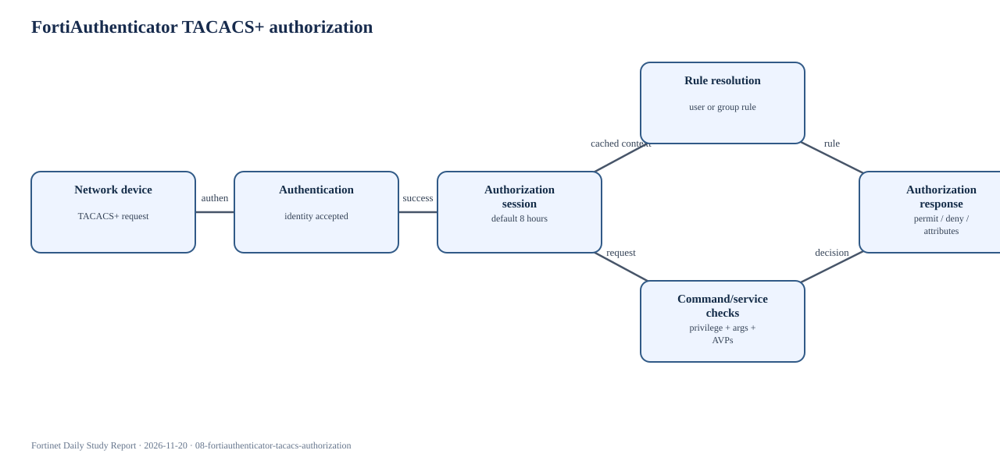
Scenario / Community reference: Open scenario reference Community session-duration tip dated July 16, 2026 (outside the 30-day window); used for the authorization-session expiry boundary.
Web-API password changers: CSRF extraction, JSON response parsing, and verification
Why Web-API changers are state machines
FortiPAM 1.9 supports password changers that interact with a target through a Web API. A Web-API changer is not one HTTP request with a success flag. It is an ordered transaction that may authenticate, extract session state, submit a password change, parse a nested response, and then verify that the target actually accepted the new credential. FortiPAM exposes separate Web Changes and Web Verifiers sequences so that the change request and the proof of success are not conflated.
Each Web Change step is either Execute or Expect. Execute sends an HTTP request using a method such as GET, POST, PUT, PATCH, or DELETE, with URL, headers, query parameters, and body as appropriate. Body encoding can be None, URI, or XML. Expect evaluates the preceding response: it can require specific HTTP status codes, match response-body content, extract cookies, and extract tokens from the response body, cookie, or header. The next command can proceed linearly or jump to another step when the configured match condition is satisfied.
CSRF and nested JSON handling
Some target APIs require a CSRF token returned during the login or session-establishment request. FortiPAM 1.9 adds configuration for extracting a CSRF token from a cookie using extract-csrftoken and csrf-key; the extracted value is stored in $CSRFTOKEN for later requests. The password-change Execute step must then send that token in the location and format expected by the target API. Capturing a cookie but failing to replay the token does not complete the CSRF transaction.
The Web-API changer also supports multi-layer JSON body parsing. This matters when the response wraps the useful value inside nested objects rather than exposing it at the top level. The extraction path must match the actual response structure. Do not assume a successful HTTP transport status means the password was changed; an API can return HTTP 200 with an application-level error or an asynchronous job identifier.
Build the change and verifier sequence
Use an Expect step after authentication to validate the expected status/body and extract the session cookie or token. Use a later Execute step to submit the password-change request, referencing the extracted token. Follow it with an Expect step that validates the target's application-level response. If the target has multiple response paths, use the Jump option to branch to the appropriate next command. Keep the sequence readable and avoid relying on broad body matches that could match both success and failure responses.
The verifier is a separate safety boundary. A good verifier proves that the new credential is accepted by the target, not merely that the API accepted a request. Depending on the target, that may mean a follow-up authentication call or a dedicated password-status endpoint. If verification fails, FortiPAM should not mark the rotation as successful just because the change request returned a 2xx code.
Evidence and troubleshooting
Review each changer step's HTTP method, URL, headers, body, response status, expected code, response-body match, and extracted cookie/token. For CSRF failures, confirm that the response actually contains the configured cookie key and that the next request sends $CSRFTOKEN. For nested JSON failures, compare the configured extraction path with the real response body. For a branch that unexpectedly skips the verifier, inspect the Expect result and the configured next-command behavior.
Community reports of password-rotation failures caused by unsupported generated special characters show why target-side validation matters. A 400 response can be a credential-policy error rather than a connectivity problem. Capture the target response and correlate it with the generated password policy. Do not simply retry the same request indefinitely.
Operational safeguards
Use a dedicated API account with only the permissions required to change the target credential. Protect secrets, tokens, and response logs. Test the changer against a non-production account first, including success, invalid-token, rejected-password, timeout, and verifier-failure paths. When changing the API version or authentication method on the target, revalidate both the Web Changes and Web Verifiers sequences. The final acceptance criterion is verified credential usability, not a green transport indicator.
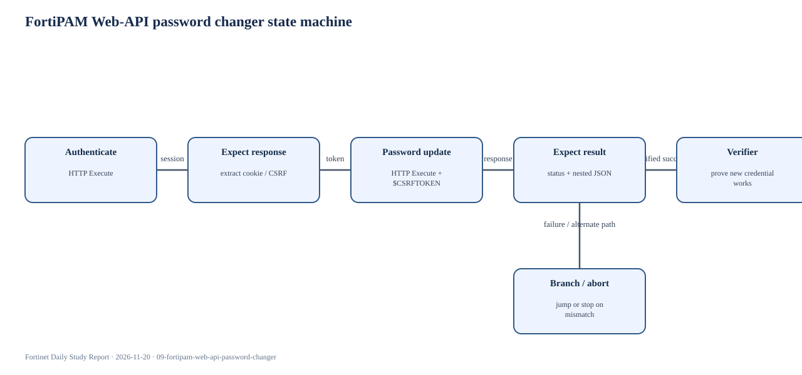
Scenario / Community reference: Open scenario reference Historical Community password-rotation failure (May 2026); it illustrates that HTTP/API password changes can fail at target validation, not just at transport.
Visual Report Designer: template precedence, PDF layout objects, and upgrade migration
Presentation templates are separate from query results
FortiSIEM's Visual Report Designer controls how report data is laid out in a generated PDF. It does not change the query that produces the report rows. This separation is important when a report contains correct data but the exported PDF has an unexpected cover page, chart arrangement, section order, or template. A report's query and its PDF design are separate objects with separate failure boundaries.
FortiSIEM can associate a design template with an individual report, a report folder, or a report bundle. When a report is generated, template resolution follows a precedence order: a template assigned directly to the report wins; if none exists, the folder template is used; if neither exists, the system-defined root template is used. A report that belongs to more than one folder uses the template of the folder currently being viewed. For Service Provider deployments, templates can be defined only at the Super/Global level and apply across customers.
Layout object model
The visual designer builds a PDF from a cover page, table of contents, pages/sections, and objects. Objects include text, images, charts, report tables, legends, and PDF attachments. The designer supports page orientation, section ordering, element positioning, and margins. The preview is valuable because it shows the rendered layout before the report is distributed. The template assignment shown in the Report Design Template column is the first place to check when a PDF does not look as expected.
A template can be created from Resources > Reports by selecting the report or bundle and opening Report Design. Save the template and verify that its name appears in the Report Design Template column. When exporting from Analytics, the Defined option uses the normal precedence rules; the New option creates a one-time format for that export and does not replace the stored template.
Upgrade behavior and migration boundary
FortiSIEM 7.0.0 introduced the Visual Report Designer and automatically converts existing pre-7.0 report and report-bundle templates the first time a user logs in after upgrade. The migration preserves most layout intent, but it has specific boundaries: subsections from older releases are not supported; a PDF attachment placed in the middle of the old template moves to the end; and multiple charts are normalized into the new layout. Two charts for the same report are placed side by side with a shared legend. Four or more charts are laid out in rows of two with a common legend at the end.
A critical migration limitation concerns custom templates assigned to report folders. In 7.0.0, assigning a custom design template to a report folder is not supported. If a pre-upgrade folder has a custom template, first-login migration can fail and display the message that another user is updating all Report Templates. Before upgrade, inspect folders and revert any custom folder template to default. Report-level and report-bundle templates remain the supported customization points described by the release documentation.
Verification and troubleshooting
When a PDF uses the wrong design, inspect the selected report's template assignment, then the folder it belongs to, then the root template. Check whether the report is part of multiple folders. Use Preview to distinguish a layout problem from a data/query problem. If the report data is wrong in Analytics as well as PDF, investigate the query separately; changing the PDF template cannot correct missing events.
After an upgrade, check the first-login migration result and inspect report folders for unsupported custom templates. If the migration is blocked, remove or revert the folder-level custom template using the documented GUI path or the supported migration procedure, then reload the GUI. Do not repeatedly log in or create duplicate templates while the migration lock message is present.
Operational design
Use report-level templates for exceptions, bundle-level templates for a curated set of reports, and root templates for the default organization-wide layout. Keep the number of custom templates small enough that precedence remains understandable. Preview after changing orientation, sections, chart arrangement, or attachments. In multi-tenant deployments, confirm the Super/Global scope before making changes that affect all customers.
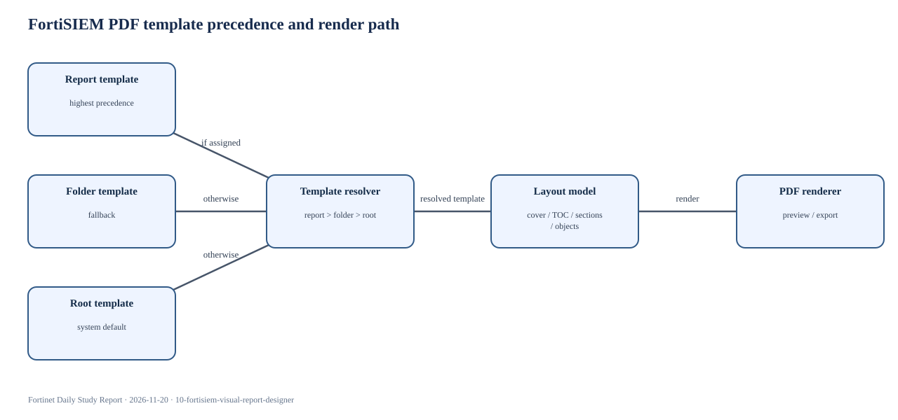
Scenario / Community reference: Open scenario reference The second link is the detailed user-guide workflow, not a Community troubleshooting article; no directly matched recent Community report-design incident was found.
DNS Filter: local domain precedence, FortiGuard rating, translation, and edge DNS exceptions
DNS filtering is a decision pipeline
FortiSASE DNS Filter evaluates DNS requests before the client receives the resolved address. It combines a local domain filter with FortiGuard category rating and optional DNS translation. The order matters: local domain rules are evaluated first. If a local entry matches and its action is Block, the query is redirected to the block portal. If the local action is Allow, the query bypasses FortiGuard category evaluation. If the local action is Monitor, the query continues to FortiGuard for rating and action. If there is no local match, FortiGuard category filtering is used.
When FortiGuard returns a category that is configured to block, the DNS request is blocked and redirected. If there is no category match, the original resolved IP is returned. This creates an important distinction between a local allow and a local monitor entry: Allow is terminal for the local rule; Monitor records the local match but still applies the FortiGuard category policy.
DNS translation and auxiliary controls
DNS translation maps a resolved destination address to another IP address. For example, if www.example.com resolves to 93.184.216.34, the profile can replace that result with 192.168.3.4 using an original destination, translated destination, and network mask. This is an address substitution in the DNS response path; it is not a change to the authoritative DNS zone and it does not create a route or firewall policy to the translated server. Verify that the translated address is reachable through the intended security policy.
The profile can block known botnet command-and-control domains, log all DNS queries and responses, and enforce Safe Search for supported search engines. Safe Search requires SSL deep inspection. The rating-error option can fail open: when FortiGuard DNS servers fail or are unreachable, FortiSASE allows DNS requests and records a log message. This is an explicit availability-versus-security choice, not a silent default to assume.
Configuration sequence
Under Security > Traffic > Security profiles, enable DNS Filter and customize the profile. Enable FortiGuard category filtering and select actions for the categories. Add local domain filters with simple, wildcard, or regular-expression matching as supported by the interface. Add DNS translation entries with original IP, translated IP, and mask. Then configure botnet redirection, detailed DNS logging, edge-device captive portal support, rating-error behavior, and Safe Search as required.
DNS Filter is not supported for proxy mode. For edge devices, the captive-portal DNS exemption policy must use a profile group that includes DNS Filter, and Edge device captive portal support must be enabled so that captive-portal FQDN resolution is handled correctly.
Evidence and failure interpretation
Review Operations > Logs > Security > DNS Filter for query and response events. Compare the queried name, local filter match, FortiGuard category/action, and final returned address. If the response is the translated IP, verify the translation entry and mask. If the request is allowed locally but resolution still fails, inspect the authoritative nameserver hostnames and CNAME chain: those names are separate DNS queries and can be rated independently. A permitted application domain does not automatically permit the domain that hosts its authoritative DNS servers.
A DNS Filter log proves the request was evaluated by the profile; it does not prove the application can establish a TCP/TLS session to the returned address. If the DNS answer is correct but access fails, inspect route, firewall policy, TLS inspection, and server reachability separately. For Safe Search, verify deep inspection is actually applied; certificate inspection alone is not enough.
Operational safeguards
Use local Allow only when the domain should bypass category rating. Use Monitor when the intent is to preserve category enforcement while collecting local-match evidence. Decide whether FortiGuard rating failure should fail open or fail closed based on the business risk. For edge captive portal deployments, test the portal FQDN before and after enabling the DNS exception. Finally, test delegated DNS and CNAME dependencies so that a locally allowed name does not fail because its nameserver hostname is blocked by another rule.
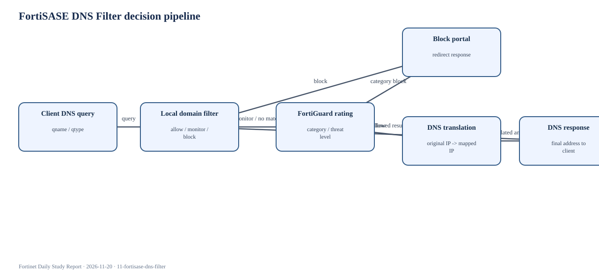
Scenario / Community reference: Open scenario reference FortiGate Community DNS Filter scenario dated September 23, 2026 (outside 30 days); used only to illustrate independent queries for authoritative nameserver hostnames.
ADVPN shortcut recovery hold-down: delayed priority restoration and strategy applicability
Why recovered shortcuts need a hold-down
In a hub-and-spoke SD-WAN deployment using ADVPN shortcuts, a tunnel that fails and later recovers can re-enter the service's candidate-member set. If the shortcut immediately regains its normal preference, traffic can move back to a path that has only just recovered, producing repeated path changes while the underlay or remote endpoint is still unstable. The SD-WAN service hold-down timer keeps the recovered shortcut at low priority until the configured interval expires.
The documented behavior also applies to primary VPN tunnels between hub and spoke devices. The feature is therefore a path-reintegration control, not an IKE keepalive or a Performance SLA probe. It does not repair a broken tunnel; it changes how the recovered member participates in the service strategy for a period after recovery.
Configuration and selection behavior
The setting is configured under the SD-WAN service:
config system sdwan
config service
edit 1
set hold-down-time 15
next
end
endThe default is zero seconds, so there is no additional hold-down unless configured. The documented range is 0 to 10,000,000 seconds. A value of 15 seconds is useful for illustrating the mechanism, not a universal recommendation. Choose the interval based on the time required for the underlay, routing adjacency, and remote service to stabilize. Excessive values can leave a recovered path underutilized; a value that is too short may not damp the path oscillation that motivated the setting.
During the hold-down period, the member can be alive yet remain low priority. This distinction is important: tunnel state and member selection are different variables. A healthy tunnel does not necessarily become the preferred path immediately. The service strategy still evaluates its eligible members, but the recovered member's temporary priority affects the ranking.
Verification
Use diagnose sys sdwan service4 or the corresponding IPv6 service diagnostic to inspect the service. The documented output includes Hold down time, Hold start, and the current time, along with each member's alive/selected state. Capture the output immediately after recovery and again after the timer expires. Before expiry, the output should show the timer running and the recovered member held at lower priority. After expiry, the member can participate according to the configured strategy and measured link conditions.
Also inspect the tunnel status and the Performance SLA separately. The hold-down output proves the service is applying a temporary priority state; it does not prove that packet loss, latency, or jitter are acceptable. If the tunnel remains down, the hold-down timer is not the cause of the outage.
Strategy-mode caveat
Do not assume that hold-down is a universal failback timer for every SD-WAN strategy. A Community technical tip specifically notes that the timer is not applicable for SLA mode. The FortiOS 8.0 admin-guide example shows the timer in service diagnostics with priority-mode selection. Therefore, inspect the actual service mode before relying on the timer. If the service uses Lowest Cost (SLA) or another SLA-driven strategy, validate the release-specific behavior and do not interpret the absence of a hold-down field as a tunnel fault.
Operational troubleshooting
When a recovered shortcut immediately attracts traffic, confirm that the service has a nonzero hold-down value and that the active service strategy supports it. When traffic does not return after the timer expires, inspect the normal service ranking, health-check state, route availability, and whether another member has better priority or cost. If the timer appears to have no effect, first confirm the strategy mode and that the recovered shortcut is actually a member of the relevant service. Avoid repeatedly clearing tunnels to force a path change; that destroys the evidence needed to understand the recovery sequence.
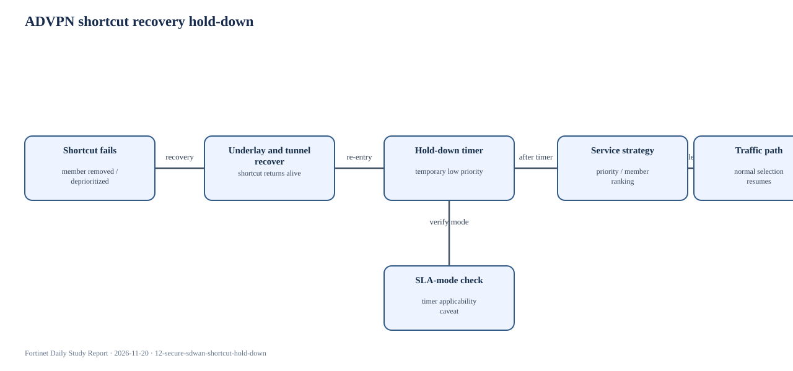
Scenario / Community reference: Open scenario reference Historical Community mode-applicability tip (October 2025); used as a caution to verify service strategy, not as the primary feature description.
50-question graded examination
Choose one answer per question. Grade the exam to see your score, the correct answer, and substantive feedback for all four choices. Correct answer positions are balanced and answer options are intentionally similar in length.
Research and publication artifacts
- Lesson source content (machine-readable)
- Quiz bank (50 questions / 200 choice explanations)
- Diagram manifest
- Validation record
- Final verification record
Direct page opening for most Fortinet Document Library pages returned HTTP 403 in this research session. The indexed page content and official source URLs were used; the 403 limitation is disclosed above rather than treated as a successful direct-page inspection.